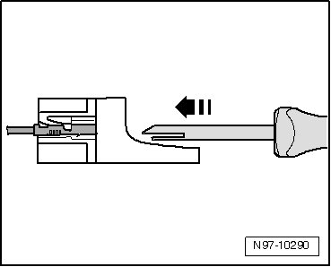

Contact Release Tools
Contact Release Tools
Various release tools are used to remove the different terminals from terminal housings without damage.

A selection of release tools are a component of Wiring Harness Repair Kit (Vas 1978) and of Wiring Harness Repair Set (VAS 1978A). Release Tool Set (VAS 1978/35) contains the entire set of release tools. Refer to --> [ Release Tool Set VAS 1978/35 ] Release Tool Set VAS 1978/35.
CAUTION!
Some tools are supplied with a tool safety clip, which is slid over the tool points after using the tool, in order to protect other workers from injuries and tool points from damage.
Releasing and disassembling terminal housings. Refer to --> [ Contact Housings Releasing ] Contact Housings Releasing.